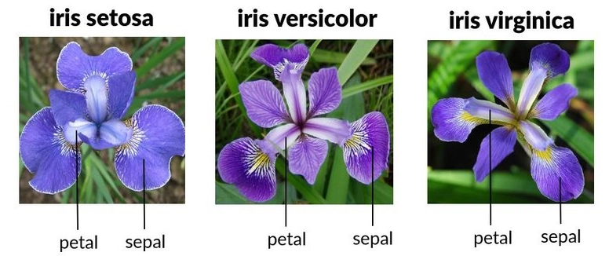

import os
import zipfile
import pandas as pd
import requests
import altair as alt
from sklearn.model_selection import train_test_split, GridSearchCV
from sklearn.preprocessing import StandardScaler
from sklearn.compose import make_column_transformer
from sklearn.pipeline import make_pipeline
from sklearn.linear_model import LogisticRegression
from sklearn.metrics import accuracy_score, confusion_matrix
from IPython.display import displayPredicting Iris species from sepal and petal information
Summary
Can the species of an iris flower be identified from its petals alone, or from its sepals alone? In this project we compared how well these two sets of measurements predict species. Using the Iris data set, which contains measurements of 150 flowers from three species, we trained two logistic regression models that were identical except for their features: one used only sepal length and width, and the other used only petal length and width. We compared the two models and found that on the test set, the petal model had an accuracy of 96.7%, the sepal model had an accuracy of 76.7%. Petal measurements separated the species much more clearly, while the sepal model often confused Iris versicolor with Iris virginica. Knowing which measurements carry the most information is useful in practice, because if one set is enough, researchers working in the field could measure fewer features per plant without losing accuracy. Our results have some limitations. The data set is small, and with only 30 flowers in the test set, a single misclassification changes the accuracy by about 3.3%. We also tested only one type of model and three species, so our findings may not hold for other models or other irises.
Introduction
Irises are flowering plants found across the Northern Hemisphere, with hundreds of species, some of which are hard to tell apart. Like many flowers, an iris has two main types of floral parts (Figure 1). The sepals are the outer parts; in irises they are large and hang downward, which is why gardeners call them “falls”. The petals are the inner parts, which usually stand upright and are called “standards”. Botanists often distinguish similar species by the size and shape of parts like these, and because they can be measured with a ruler, they offer a simple and objective way to describe a flower.

The data we used has a long history. In the 1930s, the botanist Edgar Anderson measured the sepals and petals of irises to study how closely related species differ from one another. Two of the three species in the data were collected on the Gaspé Peninsula in Quebec. The statistician Ronald Fisher then used Anderson’s measurements to demonstrate a new method for sorting observations into groups based on several measurements at once (Fisher, 1936). Since then, the data set has become one of the most widely used examples in statistics and machine learning, and it is often one of the first data sets people meet when learning about classification.
The question of which measurements matter most is worth answering for several reasons. Some iris species look very similar; Iris versicolor and Iris virginica in particular can be hard to tell apart by eye, so measurements can make identification more reliable. At the same time, measuring flowers takes time, especially when a researcher has many plants to measure in the field. If one part of the flower is enough to identify the species, the other measurements could be skipped, making data collection faster without losing accuracy. The question also reflects a common problem in data science: knowing which features carry the most information. A model with fewer, more informative features is simpler, easier to explain and less likely to overfit, which matters especially on a small data set. The Iris data is well suited to studying this, because its features fall naturally into two groups that can be compared fairly.
The question we are trying to answer is: Are sepal measurements or petal measurements better for predicting the species of an iris flower?
To answer this question, we used the Iris data set from the University of California, Irvine (UCI) Machine Learning Repository (Fisher, 1988). Each row represents one iris flower. There are 150 flowers in total, 50 from each of three species: Iris setosa, Iris versicolor and Iris virginica. Each flower has four measurements, all recorded in centimetres: sepal length, sepal width, petal length and petal width. We split these into two groups: the sepal measurements (sepal length and sepal width) and the petal measurements (petal length and petal width).
The target variable is the species of each flower. It is a categorical variable with three possible values (setosa, versicolor or virginica), which makes this a classification problem. The data can answer our question because every flower has both sepal and petal measurements as well as a known species. This means we can train one model on the sepal measurements only and another on the petal measurements only, keep everything else the same, and compare how well each predicts the species of flowers it has not seen before, as well as how large the difference between them is.
Methods
Data
For this project, we used the Iris data set (Fisher, 1936) from the University of California, Irvine (UCI) Machine Learning Repository. Each row describes one iris flower with five columns: four measurements in centimetres (sepal length, sepal width, petal length and petal width) and the flower’s species (Iris setosa, Iris versicolor or Iris virginica). The data contain 150 flowers, 50 of each species, and are shared under a Creative Commons Attribution 4.0 International (CC BY 4.0) license. The code below downloads the zipped data from the repository and saves it, along with its extracted files, to the data/raw folder.
# check for data folders, create them if they do not exist
os.makedirs("../data/raw", exist_ok=True)
os.makedirs("../data/processed", exist_ok=True)
# download data as zip and extract
# this archive (UCI "Iris") contains iris.data, bezdekIris.data,
# iris.names and Index
url = "https://archive.ics.uci.edu/static/public/53/iris.zip"
request = requests.get(url)
request.raise_for_status() # stop with an error if the download failed
with open("../data/raw/iris.zip", "wb") as f:
f.write(request.content)
with zipfile.ZipFile("../data/raw/iris.zip", "r") as zip_ref:
zip_ref.extractall("../data/raw")The archive contains two copies of the data. The file iris.data has two known errors, in the 35th and 38th flowers (Bezdek et al., 1999), and bezdekIris.data corrects them, so we used the corrected file. The file has no header row, so we named the columns when reading it in.
# read in the corrected data file and name the columns
# (the raw file has no header row)
column_names = [
"sepal_length_cm",
"sepal_width_cm",
"petal_length_cm",
"petal_width_cm",
"species",
]
iris = pd.read_csv(
"../data/raw/bezdekIris.data",
header=None,
names=column_names,
)
iris.head()| sepal_length_cm | sepal_width_cm | petal_length_cm | petal_width_cm | species | |
|---|---|---|---|---|---|
| 0 | 5.1 | 3.5 | 1.4 | 0.2 | Iris-setosa |
| 1 | 4.9 | 3.0 | 1.4 | 0.2 | Iris-setosa |
| 2 | 4.7 | 3.2 | 1.3 | 0.2 | Iris-setosa |
| 3 | 4.6 | 3.1 | 1.5 | 0.2 | Iris-setosa |
| 4 | 5.0 | 3.6 | 1.4 | 0.2 | Iris-setosa |
Data cleaning
We confirmed that there were 150 rows, with 50 flowers of each species, and that the data contained no missing values. We then removed the “Iris-” prefix from the species names to make the figures and tables that follow easier to read, and saved the cleaned data to the data/processed folder.
print(iris.shape)
iris.info()
print(iris.isna().sum())
print(iris.value_counts("species"))
iris["species"] = iris["species"].replace({
"Iris-setosa": "setosa",
"Iris-versicolor": "versicolor",
"Iris-virginica": "virginica",
})
iris.to_csv("../data/processed/iris_clean.csv", index=False)(150, 5)
<class 'pandas.DataFrame'>
RangeIndex: 150 entries, 0 to 149
Data columns (total 5 columns):
# Column Non-Null Count Dtype
--- ------ -------------- -----
0 sepal_length_cm 150 non-null float64
1 sepal_width_cm 150 non-null float64
2 petal_length_cm 150 non-null float64
3 petal_width_cm 150 non-null float64
4 species 150 non-null str
dtypes: float64(4), str(1)
memory usage: 6.0 KB
sepal_length_cm 0
sepal_width_cm 0
petal_length_cm 0
petal_width_cm 0
species 0
dtype: int64
species
Iris-setosa 50
Iris-versicolor 50
Iris-virginica 50
Name: count, dtype: int64Splitting the data
Before any data exploration or preprocessing, we split the data, with 80% allocated to the training set and 20% to the test set. Because the data set is small, we wanted to give the models as much training data as possible. The split was stratified by species so that each set has the same species proportions, and a random seed was set for reproducibility. We then separated the features from the target, since scikit-learn takes them as separate inputs. Finally, because our analysis compares more than one model, we defined a feature group for each model to select from the same training and test sets. This means every model is trained on the same flowers and evaluated on the same flowers, which keeps the comparison fair.
iris_train, iris_test = train_test_split(
iris, test_size=0.20, random_state=522, stratify=iris['species'])
iris_train.to_csv("../data/processed/iris_train.csv", index=False)
iris_test.to_csv("../data/processed/iris_test.csv", index=False)
# separate the features (X) from the target (y), for both sets
X_train = iris_train.drop(columns="species")
y_train = iris_train["species"]
X_test = iris_test.drop(columns="species")
y_test = iris_test["species"]
# the two feature groups to compare
sepal_features = ["sepal_length_cm", "sepal_width_cm"]
petal_features = ["petal_length_cm", "petal_width_cm"]Analysis
Logistic regression, as implemented in scikit-learn (Pedregosa et al., 2011), was used to build two classification models, one using sepal measurements and one using petal measurements, to compare which group of measurements better predicts iris species. Together, the two models use all four measurements in the data set. Both models were fitted with identical preprocessing (standardizing the features) and the same hyperparameter tuning (the inverse regularization strength, C, chosen using 5-fold cross-validation on the training set): the sepal model uses sepal length and sepal width, and the petal model uses petal length and petal width. Keeping everything else identical allowed us to attribute any difference in performance to the feature group.
All four measurements are continuous and share the same units, but logistic regression’s regularization penalizes all coefficients equally, so we standardized each measurement to have a mean of 0 and a standard deviation of 1. The scaler is placed inside each model’s pipeline, so it is learned from the training data only, and within cross-validation from each fold’s training portion only. As a result, no information from the validation or test data leaks into it.
For our evaluation metric, we used accuracy, which represents the proportion of flowers whose species is predicted correctly. Because the three species are equally represented in the data, accuracy is a fair and easily interpretable metric. All models were evaluated with the same metric, the same cross-validation folds and the same test set, so they can be compared directly.
# create one preprocessor per feature group: select that group's columns and scale them
def make_preprocessor(features):
return make_column_transformer(
(StandardScaler(), features),
remainder="drop",
verbose_feature_names_out=False, # keep the original column names
)
sepal_preprocessor = make_preprocessor(sepal_features)
petal_preprocessor = make_preprocessor(petal_features)# define search space for tuning C, and specify cross-validation fold count
param_grid = {"logisticregression__C": [0.001, 0.01, 0.1, 1, 10, 100, 1000]}
cv_folds = 5
# function to tune and fit the model, given a feature group's preprocessor
def fit_species_model(preprocessor):
"""Tune and fit a logistic regression using the given preprocessor."""
pipeline = make_pipeline(preprocessor, LogisticRegression(max_iter=1000))
search = GridSearchCV(pipeline, param_grid, cv=cv_folds, scoring="accuracy")
search.fit(X_train, y_train)
return searchWe then applied the same tuning procedure to the sepal measurements and to the petal measurements, giving one tuned model per feature group. Tuning results and test set performance are reported in the Results & Discussion section.
# fit one tuned model per feature group
sepal_model = fit_species_model(sepal_preprocessor)
petal_model = fit_species_model(petal_preprocessor)Results
Exploratory data analysis
In the training data, the three species have similar sepal widths but differ more clearly in sepal length, and they differ strongly in both petal length and petal width. Setosa has much smaller petals than the other two species, while versicolor and virginica overlap more.
# summarize each measurement by species (training data only):
# mean, with standard deviation in brackets
measurement_labels = {
"sepal_length_cm": "Sepal length (cm)",
"sepal_width_cm": "Sepal width (cm)",
"petal_length_cm": "Petal length (cm)",
"petal_width_cm": "Petal width (cm)",
}
species_groups = iris_train.groupby("species")
means = species_groups.mean().map("{:.2f}".format)
sds = species_groups.std().map("{:.2f}".format)
train_summary = (
(means + " (" + sds + ")")
.rename(columns=measurement_labels)
.assign(**{"Number of flowers": species_groups.size()})
.rename_axis("Species")
)
train_summary| Sepal length (cm) | Sepal width (cm) | Petal length (cm) | Petal width (cm) | Number of flowers | |
|---|---|---|---|---|---|
| Species | |||||
| setosa | 4.97 (0.37) | 3.42 (0.40) | 1.44 (0.18) | 0.23 (0.08) | 40 |
| versicolor | 5.89 (0.49) | 2.77 (0.32) | 4.22 (0.47) | 1.32 (0.21) | 40 |
| virginica | 6.57 (0.57) | 2.98 (0.33) | 5.52 (0.48) | 2.01 (0.27) | 40 |
Table 1: Mean (standard deviation) of each measurement by species in the training data.
In the petal plot, the three species form fairly distinct clusters, with setosa clearly separated and only a small overlap between versicolor and virginica. In the sepal plot, setosa is still distinct, but versicolor and virginica overlap substantially. This suggests the petal measurements may predict species better than the sepal measurements, which is what our models try to answer directly.
# scatter plot of two measurements in the training data, coloured by species
def species_scatter(x, y, x_title, y_title, title):
return alt.Chart(iris_train, title=title).mark_point(
filled=True, size=60, opacity=0.6 # transparency shows overlapping flowers
).encode(
x=alt.X(x, type="quantitative", title=x_title).scale(zero=False),
y=alt.Y(y, type="quantitative", title=y_title).scale(zero=False),
color=alt.Color("species", type="nominal", title="Species"),
shape=alt.Shape("species", type="nominal", title="Species"),
tooltip=["species", x, y],
).properties(width=450, height=250)
sepal_plot = species_scatter(
"sepal_length_cm", "sepal_width_cm",
"Sepal length (cm)", "Sepal width (cm)", "Sepal measurements",
)
petal_plot = species_scatter(
"petal_length_cm", "petal_width_cm",
"Petal length (cm)", "Petal width (cm)", "Petal measurements",
)
(sepal_plot & petal_plot).configure_axis(
labelFontSize=12, titleFontSize=14
).configure_legend(
labelFontSize=12, titleFontSize=14
).configure_title(
fontSize=16
)Figure 1: Sepal measurements (left) and petal measurements (right) of the flowers in the training data, coloured by species.
species_order = ["setosa", "versicolor", "virginica"]
models = {
"Sepal measurements": sepal_model,
"Petal measurements": petal_model,
}
results = []
confusion_matrices = {}
for name, model in models.items():
predictions = model.predict(X_test)
results.append({
"Feature set": name,
"Best C": model.best_params_["logisticregression__C"],
"Mean CV accuracy": model.best_score_,
"Test accuracy": accuracy_score(y_test, predictions),
})
matrix = confusion_matrix(
y_test,
predictions,
labels=species_order,
)
confusion_matrices[name] = pd.DataFrame(
matrix,
index=[f"Actual {species}" for species in species_order],
columns=[f"Predicted {species}" for species in species_order],
)
results_df = pd.DataFrame(results).round(3)The petal model performed better than the sepal model on this test split (Table 1). It correctly classified 29 of 30 flowers, compared with 23 of 30 for the sepal model. The confusion matrices show which species were misclassified (Tables 2 and 3).
Table 2. Cross-validation and test accuracy by feature set
| Feature set | Best C | Mean CV accuracy | Test accuracy |
|---|---|---|---|
| Sepal measurements | 1 | 0.833 | 0.767 |
| Petal measurements | 10 | 0.958 | 0.967 |
Table 3. Sepal model confusion matrix
| Actual speScies | Predicted setosa | Predicted versicolor | Predicted virginica |
|---|---|---|---|
| setosa | 10 | 0 | 0 |
| versicolor | 0 | 6 | 4 |
| virginica | 0 | 3 | 7 |
Table 4. Petal model confusion matrix
| Actual species | Predicted setosa | Predicted versicolor | Predicted virginica |
|---|---|---|---|
| setosa | 10 | 0 | 0 |
| versicolor | 0 | 10 | 0 |
| virginica | 0 | 1 | 9 |
Discussion
As we can see that, the petal model classify the Iris species more accurately than the sepal model. Since the petal model has 96.7 % test accuracy which is better than 76.7% test accuracy for the sepal model. Also, the confusion matrix shows that both models classify the Iris Setosa correctly. The petal model has only 1 incorrect prediction of Iris Virginica，while sepal model has 7 incorrect prediction of Iris Versicolour and Iris Virginica. Our result can enable scientists and even other people to know that in cases where measurement conditions are limited, and people wants to quickly classify the types of iris, measuring petal is more useful than measuring sepal. Also, it can save time and costs for researchers. Our finding meet what we expected to find, petal is more accurate than sepal. There are still many limitations in our research. Firstly, the dataset is quite small and only contains 150 Iris (50 for each of 3 Iris). The small size of data may cause the model to be inaccurate for the other unknown Iris. Secondly, we could also try other model but not only using Logistic Regression. If we try other model on the same data, we may have different results. Our finding may influence the steps and priorities that scientists choose for measurements before conducting experiments. There are some future questions this research could lead to. Is Logistic Regression the best predictive model? Can the accuracy be further improved by using another model? Besides petal and sepal, what other features can be used to classify Iris?
References
Anand. (2024, May 28). ML intro : Iris dataset. DEV Community. https://dev.to/kammarianand/ml-intro-iris-dataset-4e13
Bezdek, J. C., Keller, J. M., Krishnapuram, R., Kuncheva, L. I., & Pal, N. R. (1999). Will the real iris data please stand up? IEEE Transactions on Fuzzy Systems, 7(3), 368-369. https://doi.org/10.1109/91.771092
Fisher, R. (1936). Iris [Dataset]. UCI Machine Learning Repository. https://doi.org/10.24432/C56C76.
Pedregosa, F., Varoquaux, G., Gramfort, A., Michel, V., Thirion, B., Grisel, O., Blondel, M., Prettenhofer, P., Weiss, R., Dubourg, V., Vanderplas, J., Passos, A., Cournapeau, D., Brucher, M., Perrot, M., & Duchesnay, E. (2011). Scikit-learn: Machine learning in Python. Journal of Machine Learning Research, 12, 2825–2830.